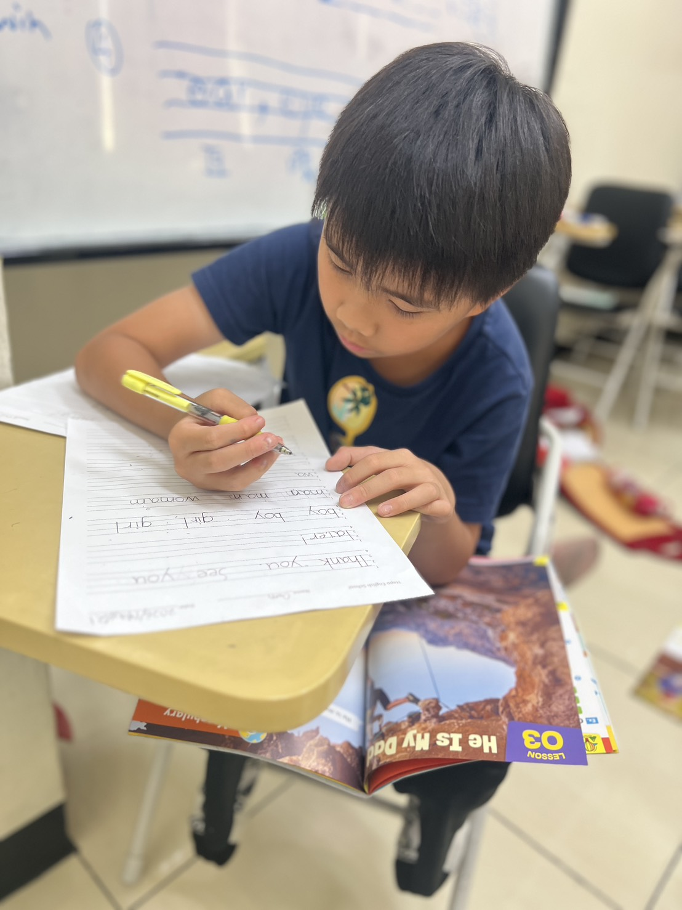
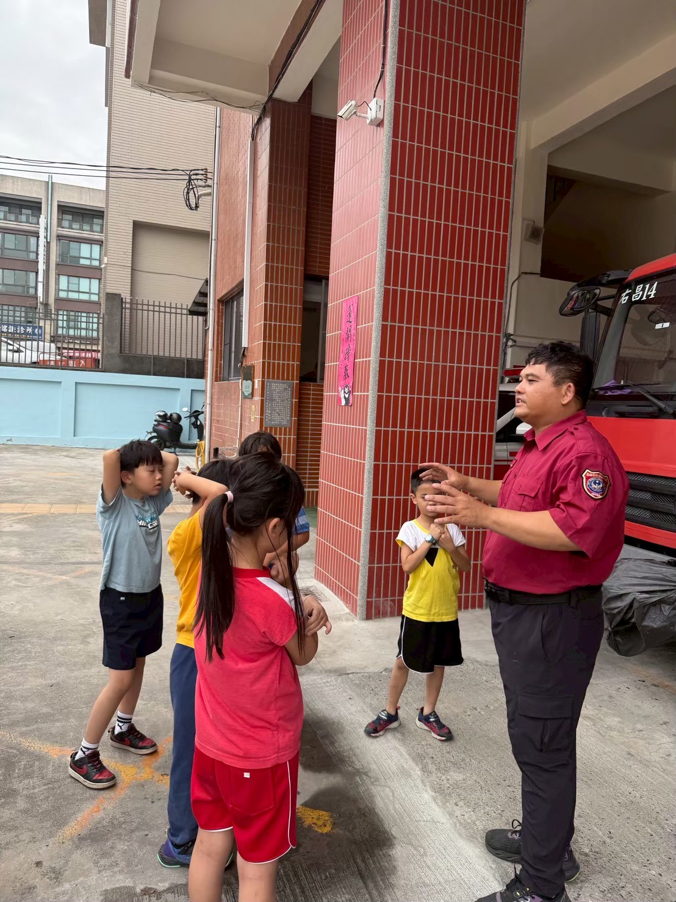
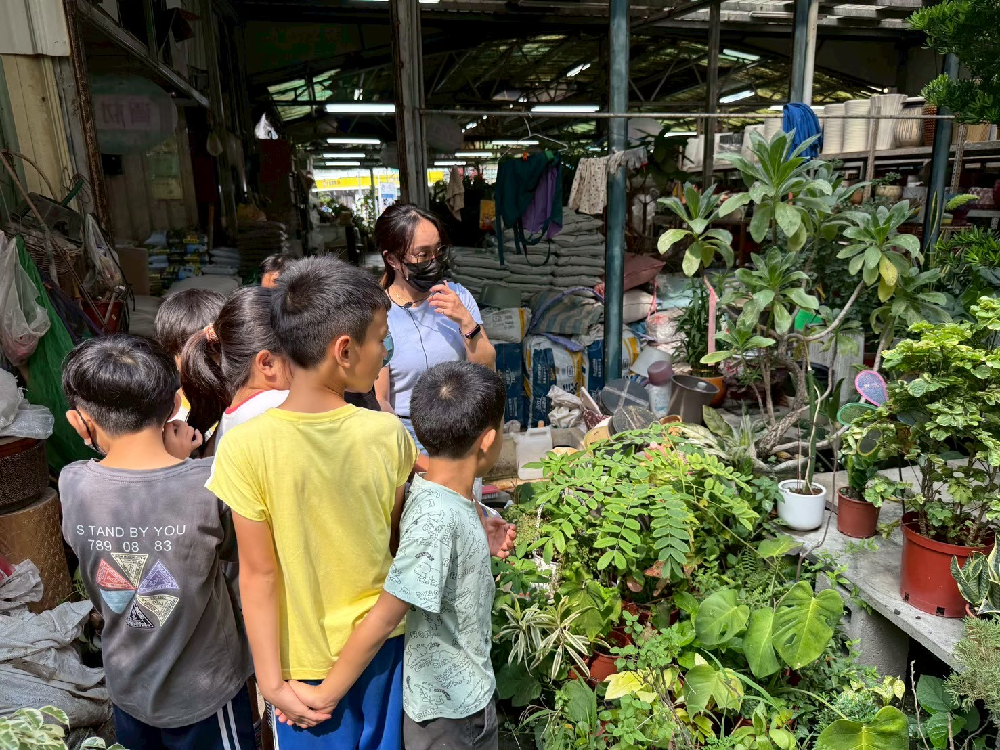
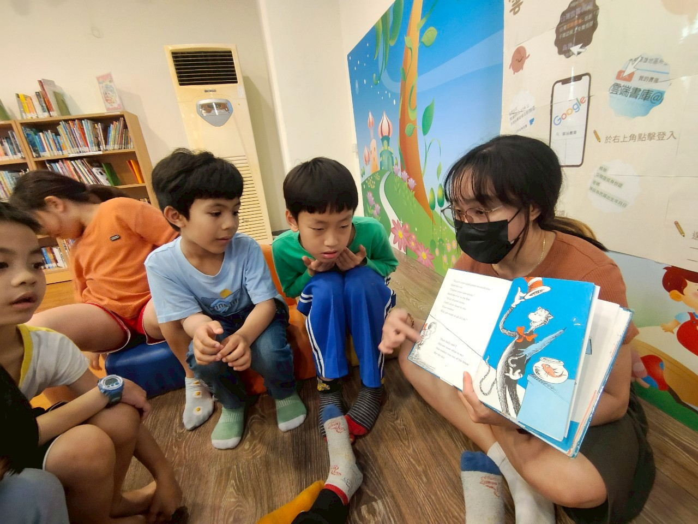
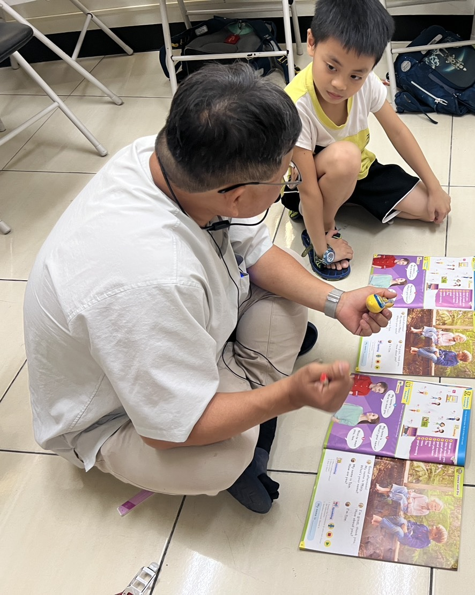
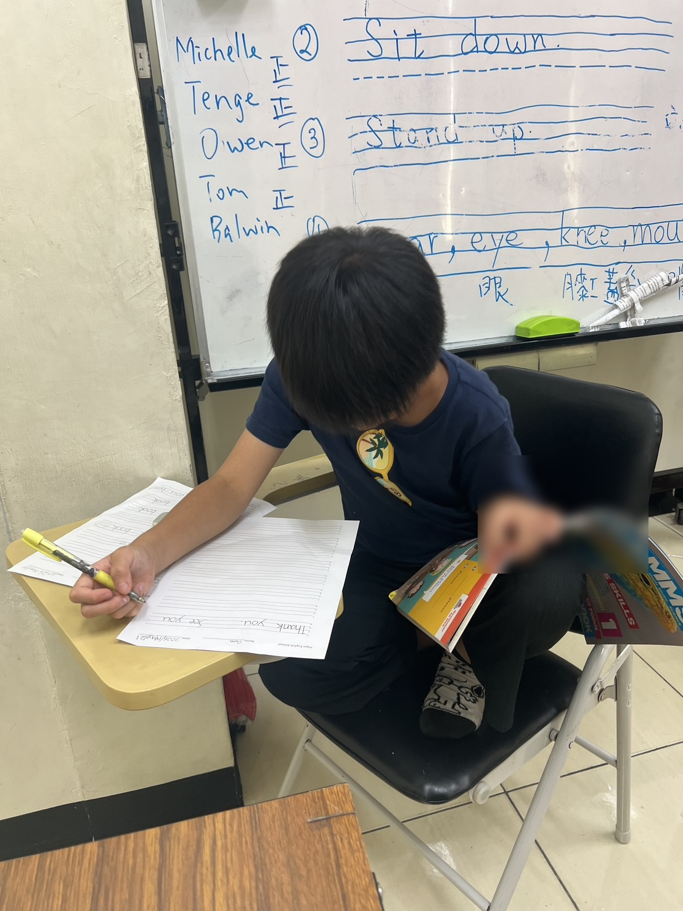

告別死背填鴨，
讓美語成為敢開口探索世界的日常語言。
「單字抄了十遍考完就忘？看到外國人一句話都說不出來？」尚學兒童生活美語拒絕填鴨死記！結合「Phonics 自然拼讀」、「歐美生活繪本」與「走進 7-11 超商、消防局、園藝店的真實生活參訪」。既能輕鬆掌握學校段考高分，更能讓孩子自信流暢開口說！


為什麼學了三年英文，孩子依然「不敢開口、單字狂忘」？
把英文當成密碼死記、被逼著抄寫十遍單字，只會抹滅學習熱情。離開教室，英文就徹底變成考卷死符號：
死背字母拼寫，單字隔週就忘光？
不知道每個字母對應的聲音，只能硬記「a-p-p-l-e」，單字一旦變長記憶就崩潰。
Phonics 音素直覺解碼，見字能讀
掌握 44 個音素韻律，看到陌生字能順暢拼讀，聽到發音能自然拼寫出 80% 單字，徹底告別死背抄寫！
看到外國人害羞閉嘴，深怕講錯被笑？
大班制補習班每堂輪到孩子說話不到一分鐘，缺乏安全的雙向互動語境。
外師小班包容互動，大方開口
營造「說錯也很棒、敢講最勇敢」的氛圍，每堂課高頻率對話，把敢於開口變成肌肉反射。
校內段考只會寫選擇題，聽力一快就慌？
大腦習慣先翻譯成中文才能理解，反應時間慢半拍，考卷一長就應付不來。
生活繪本情境沉浸，聽力段考滿分
透過繪本與生活任務培養「以英語理解英語」的直接語感，學校段考與聽力測驗從容拿滿分！
走出教室！尚學四大真實生活情境任務
語言不是考卷上的死符號，而是探索生活的工具。我們把教室搬到楠梓社區，讓孩子在真實場景中開口！
 任務 01・走進社區
任務 01・走進社區
右昌消防分隊實地參訪與探索
實地參訪右昌消防分隊，親眼看到超大台紅色消防車與裝備！孩子在興奮好奇的探索中，開心地指著說 Fire truck、Hose、Water，把美語自然融入生活快樂記憶。

任務 02・大自然觀察園藝店植物五感探索
走進園藝花坊，觸摸各種泥土與植物。結合五感體驗學習 Root, Stem, Leaf, Blossom 等自然科學英文，讓美語與自然跨學科融合。
7-11 超商點餐與購物任務
由外師陪伴走進便利商店，每位孩子拿著任務清單，親自用英語詢問價格、確認品項與收銀結帳，在真實商業場景中驗證口語應對能力！

任務 04・經典繪本導讀圖書館繪本沉浸對話
精選歐美經典繪本，外師以豐富肢體語言引導孩子猜測情節、分段角色扮演。不逐字翻譯，以情境圖像直接理解文意，培養地道語感。
Phonics 自然拼讀三步曲：見字能讀、聽音能寫
打破「a-p-p-l-e 抄十遍」的痛苦循環，讓孩子的大腦建立「字母形狀與語音」的直接神經回路。
辨識 44 個音素韻律
聽得出 cat 是由 /k/、/æ/、/t/ 三個聲音組成。透過童謠與口型示範，精準校正發音死角。
見字能讀・陌生字不慌
掌握短母音、長母音、雙子音（bl, ch, sh）規則。即使沒看過的新單字也能順暢拼讀出來。
聽音能寫・告別死背
聽到單字發音，大腦自動拆解音節並寫下正確字母。聽寫測驗滿分，再也不需要家長盯抄寫！
走入真實情境：把生活變成孩子的美語遊樂場
尚學實境教學點滴，讓每一次開口都充滿探索與自信：


預約兒童美語互動試聽・免費語感程度診斷
歡迎帶孩子來尚學體驗一堂生動有趣的美語互動課。由專業老師親自為孩子做語感診斷，找出最自在開口的學習起點。
當日到班參觀，免費提供「Phonics 自然拼讀程度評估」與「課堂沉浸美語互動體驗乙次」，名額有限敬請提前預約。
關於兒童生活美語的常見問題
Q1. 孩子完全零基礎、字母都不認得，跟得上生活美語課嗎？
完全跟得上！初學孩子會從最基礎的字母發音律動與生活實體教具開始，搭配老師溫暖鼓勵的肢體引導，孩子在第一堂課就能開心跟著外師開口！
Q2. 生活美語會不會偏向「只會玩」，導致學校英文段考成績不理想？
絕對不會！尚學堅持「生活情境開口」與「校內考綱扎根」雙軌並行。孩子在情境中掌握的單字文意更深刻，回到考卷上的單字填寫與聽力題，反應速度遠勝死背的孩子！
Q3. 外師教學時，孩子如果聽不懂會不會感到害怕挫折？
課堂均有輔導助教在旁協助。外師具備多年兒童教學經驗，善於運用生動表情、繪本圖卡與情境手勢引導，孩子很快就會忘記緊張、融入對話。
Q4. 到了國小高年級（小五小六），美語課會如何銜接？
完成兒童美語基礎後，小五小六學員將平穩銜接至尚學「國中先修英文（進階英語素養）」，進一步擴充 1200 核心字彙、掌握國中五大句型結構，無痛跨越難度斷崖！